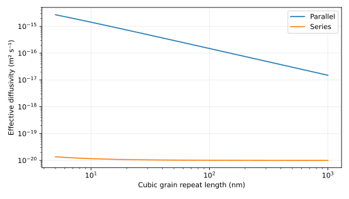

IIT Hyderabad · NPTEL · Independent study edition
Ordered, nanocrystalline, and quasicrystalline materials
A high density of possible destinations does not guarantee rapid atomic transport. An ordered crystal penalizes some destinations chemically, a nanocrystal changes the amount and connectivity of interfacial material, and a quasicrystal changes the relation between local motion and long-range order. In each case, the transport model must describe which configurations are allowed and which sequence of moves produces lasting displacement.
Source spine: ordered compounds in L46, nanocrystals in L47, and quasicrystals in L48. The explicit four-site cycle, shared-boundary geometry, and tensor-symmetry argument are developed here. Material-specific empirical tables and unresolved detailed regime-map formulas are not reconstructed from captions.
22.1 Sites and atoms are different objects L46 00:19
An ordered compound has chemically distinct sublattices: particular site sets preferentially contain particular species. In ideal B2 AB, put A sites at integer coordinates of a cubic lattice and B sites at its body centers. The Bravais lattice of the chemically ordered structure is simple cubic with a two-atom basis. Erasing the distinction between A and B gives the familiar body-centered arrangement, but the chemical ordering matters for both diffraction and diffusion.
Write \(A_B\) for an A atom occupying a B site, an antisite, and \(V_A\) for a vacancy on an A site. These symbols distinguish an atom's chemical identity from the site's preferred occupant. A nearest-neighbor atom–vacancy exchange in B2 switches sublattices and can create an antisite. Subsequent exchanges may restore order or accumulate additional disorder. Thus a large local jump rate does not necessarily imply a large long-time tracer diffusivity.
A compound can accommodate off-stoichiometry through structural vacancies, antisites, or combinations whose free energies depend on composition. A line compound is an idealized phase with negligible composition width; real ordered phases can have finite homogeneity ranges. Thermal defects coexist with those needed by composition. The equilibrium population and the transition rates are separate ingredients: chemical order changes both the probability of finding a configuration and the rate of leaving it.
For comparison, ideal L1₂ A₃B has B at cube corners and A at face centers. Each nearest-neighbor shell has twelve sites, as in the underlying face-centered arrangement. An A face-center site has eight A and four B neighbors; a B corner has twelve A neighbors. Relative to a corner, the nearest face centers have coordinates given by permutations of \((\pm1/2,\pm1/2,0)\) in cubic-parameter units: three choices of the zero coordinate and four sign combinations give twelve sites. The majority A sublattice therefore has connected nearest-neighbor A sites, whereas B sites do not neighbor one another directly. This distinction changes which order-preserving vacancy paths are available.
The source slide's statement that the minority L1₂ atom has only four A neighbors is inconsistent with this geometry. We use twelve. The correction affects mechanism reasoning: minority motion cannot be analyzed by importing the majority sublattice's coordination. Tracer coefficients that happen to be similar can suggest a coupled mechanism, but their numerical similarity is not a unique fingerprint.
22.2 A six-jump cycle restores chemical order L46 15:48
Consider four B2 sites, in units of the cubic lattice parameter \(a_0\): site0 at \((0,0,0)\), site1 at \((1/2,1/2,1/2)\), site2 at \((1,1,0)\), and site3 at \((1/2,1/2,-1/2)\). Sites0 and2 belong to the A sublattice;1 and3 to B. Every edge of the cycle0–1–2–3–0 has length \(\sqrt3a_0/2\) and joins unlike sublattices. Initially place a vacancy at0 and correct atoms at the other sites.
Exchange the vacancy successively with occupants of sites1,2,3,0,1,2. The complete configuration, rather than just the vacancy trajectory, determines whether order is restored. In the table a dash denotes a vacancy, and entries identify atom species, not site types.
| Completed jumps | Site0 (A) | Site1 (B) | Site2 (A) | Site3 (B) | Antisites |
|---|---|---|---|---|---|
| 0 | — | B | A | B | 0 |
| 1 | B | — | A | B | 1 |
| 2 | B | A | — | B | 2 |
| 3 | B | A | B | — | 3 |
| 4 | — | A | B | B | 2 |
| 5 | A | — | B | B | 1 |
| 6 | A | B | — | B | 0 |
At the end the vacancy has moved to another A site by \(a_0[110]\), the A atom has moved oppositely, and the B atoms have exchanged their individual positions. The final occupied sites are chemically correct. Order preservation is therefore compatible with motion of both chemical species. During the cycle, however, three antisites coexist at its most disordered stage. Their energies and the competing reverse jumps determine the probability of completing the cycle.
This is one specified mechanism, not a theorem that every sequence of six jumps restores order. A sequence containing repeated immediate reversals may produce no net displacement. Converting cycle completion into a diffusivity requires the cycle frequency, possible orientations, species displacements, and intercycle correlations. Model-specific ratios between A and B tracer coefficients cannot be treated as universal bounds across ordered alloys.
A triple defect in a specified B2 convention combines two vacancies on one sublattice with an antisite on the other, for example \(2V_A+A_B\). Its motion can use coordinated sequences different from the single-vacancy cycle. An antistructural bridge uses pre-existing antisites to connect otherwise restricted transport paths. Sustained long-range motion requires suitable connectivity, often expressed as a percolation condition: enough linked accessible sites to span the specimen. Merely finding one antisite does not establish such a network. Composition-dependent vacancies and antisites can therefore change the dominant mechanism without a change in the compound's nominal structure.
22.3 Nanocrystals change amount, spacing, and stability L47 00:19
A nanocrystalline material contains grains with dimensions on the nanometer scale. The transport consequence is geometric before it is kinetic: there is more interface per volume, and a short absolute diffusion distance can cross a whole grain. Physical deposition, chemical synthesis, and biological routes can produce different porosity, impurities, stresses, and boundary states. Grain size alone is therefore an incomplete specification of a transport specimen.
For an explicit geometry, tile space by cubic cells of repeat length \(d\). Assign a shared boundary layer of full width \(\delta<d\) to each cell face, leaving a crystalline interior cube of side \(d-\delta\). Counting the boundary material once gives
\[g=1-(1-\delta/d)^3=3\delta/d-3(\delta/d)^2+(\delta/d)^3.\tag{22.1}\]The leading term is \(3\delta/d\). Dividing six exposed cube faces by volume gives \(6/d\), but each internal face belongs to two neighboring cells and must be shared. Confusing a full boundary width with a shell thickness on each side produces another factor of two. The finite expression also accounts for edge and corner overlaps within this idealized assignment; it is not an atom-counting law for every real boundary.
With synthetic \(\delta=0.5\)nm, a10nm cell gives \(g=0.142625\), whereas100nm gives0.0149251. The thin-width estimates are0.15 and0.015. Holding \(D=10^{-20}\)m²s⁻¹ and \(D_b=10^{-14}\)m²s⁻¹ fixed, the parallel coefficients are \(1.42626\times10^{-15}\) and \(1.49261\times10^{-16}\)m²s⁻¹. The corresponding series coefficients remain close to the lattice value. More interfacial material has a large consequence only when it participates in an effective route.

Grain growth makes the fraction and spacing time-dependent. Structural relaxation changes boundary mobility even at nearly fixed grain size. A fitted constant coefficient then averages an evolving specimen rather than measures one immutable boundary state. Measure size distributions before and after annealing, and seek intermediate-time information when growth is substantial. Porosity and triple junctions provide additional paths whose contribution need not scale with boundary area in the same way.
22.4 Grain size can move an experiment between regimes L47 08:35
Two distances are especially useful: bulk leakage length \(\ell_D=\sqrt{Dt}\) and leakage-free boundary length \(\ell_C=\sqrt{D_bt}\). Compare both with grain spacing \(d\). When \(\ell_C\) spans many grains while \(\ell_D\) remains short, a connected boundary network can conduct deeply without equilibrating grain interiors. When \(\ell_D\) becomes comparable with spacing, adjacent leakage fields overlap and the isolated-boundary approximation fails.
A B-regime scale can be obtained by a balance rather than by copying a detailed regime chart. Let \(L_B\) be penetration depth along an isolated boundary, \(c_s\) the adjacent lattice tracer concentration in molm⁻³, and \(s_b=c_b/c_s\) the dimensionless equilibrium segregation factor, where \(c_b\) is boundary tracer concentration on the same concentration-per-volume basis. Write \(D\) for lattice diffusivity and \(D_b\) for along-boundary diffusivity, both in m²s⁻¹. Assume rapid local boundary–lattice equilibrium and define \(P=s_b\delta D_b\), with units m³s⁻¹ and the full boundary width \(\delta\) defined above. The divergence of boundary transport per boundary area scales as \(Pc_s/L_B^2\). The growing leakage halo stores an amount of order \(c_s\sqrt{Dt}\) per boundary area, whose time derivative scales as \(c_s\sqrt{D/t}\). Equating these scales gives
\[L_B\sim(P^2t/D)^{1/4},\qquad t_{B,d}\sim Dd^4/P^2.\tag{22.2}\]The second estimate sets \(L_B\sim d\). Numerical prefactors and source dependence are intentionally absent from this scaling argument. It explains why boundary penetration can grow as the fourth root of time while ordinary leakage grows as the square root. It also explains why reducing grain size changes more than a transport fraction: the characteristic network distances are crossed sooner. The full source discussion subdivides finite-spacing regimes; the present estimates should not be substituted for its detailed transition formulas.
The source calls the separated-fringe, two-branch case B2. In a coarse specimen, continued growth of lattice penetration relative to the fourth-root boundary scale can produce a nearly planar-front B4 description before the eventual A regime. In a finer specimen, the boundary penetration can exceed grain size while leakage fringes remain separate; this is the B2′ network extension. A C′ extension similarly denotes transport through a boundary network over many grains with negligible bulk leakage. Primed A labels distinguish effective-medium situations for these finer structures. These labels summarize relations among lengths; they do not define new atomistic jump mechanisms. Their exact transition prefactors require the corresponding network model.
Strong segregation changes the effective capacity length from a purely geometric width to \(s_b\delta\). It can close the interval in which a simple isolated B asymptotic applies. With rapid equilibrium, the effective parallel coefficient must include storage as in Chapter20. Using \(gD_b\) as a dominant conductance additionally requires \(gD_b\gg(1-g)D\), not merely a large contrast \(D_b/D\). A very small fraction can compensate a very large contrast.
22.5 Quasiperiodic order constrains a diffusion tensor L48 00:20
A quasicrystal has long-range order and sharp diffraction, yet lacks ordinary three-dimensional translational periodicity. Noncrystallographic rotational symmetries distinguish it from a periodic crystal. A decagonal structure can be periodic along its tenfold axis and quasiperiodic in the perpendicular plane. An icosahedral structure has a different set of three-dimensional rotational symmetries. Neither description means random atomic positions.
The Fibonacci sequence illustrates one way nonperiodic order can have precise mathematical structure. Define \(F_{n+1}=F_n+F_{n-1}\) with positive initial terms. If ratios converge to \(r>0\), dividing the recurrence by \(F_n\) gives \(r=1+1/r\). The positive root is \((1+\sqrt5)/2=1.61803\); the computed ratio34/21 is1.61905. This example explains a quasiperiodic construction, not a claim that every quasicrystal consists of one Fibonacci chain.
For a homogeneous specimen with no applied field selecting another direction, write \(\mathbf J=-\mathsf D\nabla c\), with symmetric diffusivity tensor \(\mathsf D\). A symmetry rotation represented by an orthogonal matrix \(\mathsf R\) must leave the physical law unchanged: \(\mathsf D=\mathsf R\mathsf D\mathsf R^T\). A tenfold rotation about \(z\) makes the in-plane eigenvalues equal and removes coupling between that plane and the invariant axis. Thus
\[\mathsf D_{\mathrm{dec}}=\operatorname{diag}(D_\perp,D_\perp,D_\parallel),\qquad \mathsf D_{\mathrm{ico}}=D_{\mathrm{iso}}\mathsf I.\tag{22.3}\]Here \(\mathsf I\) is the identity matrix. Icosahedral rotations about multiple nonparallel axes eliminate the remaining special axis and force a scalar second-rank tensor. This argument concerns second-rank long-wavelength transport in a symmetry-preserving state; microscopic paths can still be highly structured. A uniaxial periodic crystal can have the same tensor form as the decagonal case, so tensor form alone does not identify quasiperiodic atomic dynamics.
Phason degrees of freedom describe rearrangements among configurations associated with quasiperiodic order. They are not adequately defined as merely an extra species of conventional point defect. Phason-related rearrangements, vacancy-mediated jumps, and collective motion are possible transport ingredients. Positive activation volume is consistent with some vacancy mechanisms but does not uniquely establish one; anisotropy is likewise a constraint rather than a mechanism label. Compare species, temperature, structure, and competing models before assigning dominance.
Tracer feasibility also requires care. Natural aluminum is effectively monoisotopic for stable-isotope contrast, but this does not mean radioactive aluminum isotopes do not exist. Available activity, lifetime, cost, and detector sensitivity determine practical isotope use. An inability to apply one tracer protocol is a measurement limit, not evidence that a species cannot diffuse.
22.6 Laboratory, exercises, and worked solutions
The deterministic laboratory enumerates the six-jump configurations and counts antisites after every move, then computes the boundary fractions and geometry curves. Its saved output confirms antisite counts1,2,3,2,1,0 and the values printed above. The species model checks chemical order; it does not simulate transition-state energies or predict a cycle rate. The plotted coefficients are synthetic fixed inputs, not measurements of an ordered or nanocrystalline alloy.
Track individual atoms. In Table22.1, distinguish the two B atoms by labels. Which move after a completed cycle?
Solution
The B atom initially at1 goes to0, then3; the B atom initially at3 goes to2, then1. The A atom initially at2 goes to1, then0. The final vacancy is at2. Chemical order is restored, but each participating atom has undergone a nonzero net displacement. Losing isotope labels would hide the B exchange, illustrating why tracer motion and chemical-order change are distinct observables.
Derive the minority coordination. List the twelve nearest A neighbors of a B atom at the origin in ideal L1₂.
Solution
In units of the cubic parameter, the neighbors are permutations of \((\pm1/2,\pm1/2,0)\). There are three choices of the zero coordinate and four sign combinations, giving twelve distinct positions, all face-center A sites, each at distance \(a_0/\sqrt2\). This direct count resolves the erroneous four-neighbor source statement without needing a fitted transport model.
Shared-interface counting. Why does the leading boundary fraction contain3 rather than6?
Solution
A cube has six faces, but each internal interface is shared by two neighboring cubes. Unique area per volume is therefore \(3/d\). Multiplication by the full assigned boundary width gives \(3\delta/d\). The exact expression subtracts edge overlaps and adds corner overlap. Counting isolated free surfaces answers a different geometry question.
A grain-growth bias. Suppose an anneal doubles grain size while all constituent coefficients stay fixed. What happens to the leading parallel boundary contribution?
Solution
In the thin-width limit \(g\approx3\delta/d\), so doubling \(d\) halves \(gD_b\). A constant-coefficient fit averages this changing contribution. If the measured coefficient falls, the observation does not by itself prove a higher jump barrier: geometric loss of boundary material is already a possible cause. Exact comparison uses (22.1) when the thin-width approximation is insufficient.
Check the B length. Verify dimensions of (22.2) and compare its time dependence with bulk leakage.
Solution
\(P^2t/D\) has dimensions \((\mathrm{m^6s^{-2}})\mathrm s/(\mathrm{m^2s^{-1}})=\mathrm{m^4}\); its fourth root is a length. The ratio \(L_B/\ell_D\) scales as \(t^{-1/4}\) for fixed coefficients. Thus leakage can catch up with a boundary fringe during a long anneal. Equality marks a scaling crossover, not a derivation of exact transition constants.
Tensor versus mechanism. A decagonal specimen has \(D_\perp>D_\parallel\). Does this prove phason-mediated diffusion?
Solution
No. Symmetry permits two independent coefficients but does not order them or specify microscopic carriers. Direction-dependent vacancy barriers or jump connectivity can also yield anisotropy. An adequate test compares quantitative temperature, species, and pressure dependences of competing models, ideally with an additional probe of configurational rearrangements. The tensor observation is a constraint on mechanisms, not a unique inversion.
Order, size, and symmetry enter a diffusion model in different places: accessible configurations, geometric capacity and connectivity, and allowed constitutive tensors. Keeping those roles separate prevents a structural label from being mistaken for a kinetic explanation.
Python laboratory
Run code/ch22.py. Inputs and scientific limits are specified in the chapter and program.
Complete runnable source
"""Ordered-jump and shared-boundary geometry teaching calculations."""
from pathlib import Path
import json
import numpy as np
import matplotlib
import matplotlib.pyplot as plt
matplotlib.use("Agg")
matplotlib.rcParams["svg.hashsalt"] = "ch22"
ROOT = Path(__file__).resolve().parents[1]
def main():
# Two-dimensional alternating square: vacancy at0, three A/B atoms.
sites = ["A", "B", "A", "B"]
state = [None, "B", "A", "B"]
vacancy = 0
history = []
for target in [1, 2, 3, 0, 1, 2]:
state[vacancy], state[target] = state[target], None
vacancy = target
history.append(
{
"vacancy_site": vacancy,
"antisites": sum(
v is not None and v != s for v, s in zip(state, sites)
),
}
)
assert history[-1]["antisites"] == 0
delta = 0.5e-9
d = np.geomspace(5e-9, 1e-6, 150)
g = 1 - (1 - delta / d) ** 3
D, Db = 1e-20, 1e-14
parallel = (1 - g) * D + g * Db
series = 1 / ((1 - g) / D + g / Db)
examples = {}
for size in [10e-9, 100e-9]:
fraction = 1 - (1 - delta / size) ** 3
examples[str(size)] = {
"boundary_fraction": fraction,
"thin_limit": 3 * delta / size,
"parallel_m2_s": (1 - fraction) * D + fraction * Db,
"series_m2_s": 1 / ((1 - fraction) / D + fraction / Db),
}
out = {
"status": "synthetic ideal structures and transport coefficients",
"six_jump_history": history,
"grain_examples": examples,
"golden_ratio": float((1 + np.sqrt(5)) / 2),
"fibonacci_ratio_34_over_21": 34 / 21,
"L12_A_neighbors": {"A": 8, "B": 4},
"L12_B_neighbors": {"A": 12},
}
fig, ax = plt.subplots(figsize=(7, 4))
ax.loglog(d * 1e9, parallel, label="Parallel")
ax.loglog(d * 1e9, series, label="Series")
ax.set(
xlabel="Cubic grain repeat length (nm)",
ylabel="Effective diffusivity (m² s⁻¹)",
)
ax.legend()
ax.grid(alpha=0.25)
fig.tight_layout()
fig.savefig(ROOT / "assets/ch22-geometry.svg", metadata={"Date": None})
plt.close(fig)
(ROOT / "code/ch22-output.json").write_text(
json.dumps(out, indent=2) + "\n"
)
print(json.dumps(out, indent=2))
if __name__ == "__main__":
main()
Recorded execution output
{
"status": "synthetic ideal structures and transport coefficients",
"six_jump_history": [
{
"vacancy_site": 1,
"antisites": 1
},
{
"vacancy_site": 2,
"antisites": 2
},
{
"vacancy_site": 3,
"antisites": 3
},
{
"vacancy_site": 0,
"antisites": 2
},
{
"vacancy_site": 1,
"antisites": 1
},
{
"vacancy_site": 2,
"antisites": 0
}
],
"grain_examples": {
"1e-08": {
"boundary_fraction": 0.1426250000000001,
"thin_limit": 0.15000000000000002,
"parallel_m2_s": 1.426258573750001e-15,
"series_m2_s": 1.1663505859737544e-20
},
"1e-07": {
"boundary_fraction": 0.014925124999999984,
"thin_limit": 0.015000000000000003,
"parallel_m2_s": 1.4926110074874983e-16,
"series_m2_s": 1.0151512440602454e-20
}
},
"golden_ratio": 1.618033988749895,
"fibonacci_ratio_34_over_21": 1.619047619047619,
"L12_A_neighbors": {
"A": 8,
"B": 4
},
"L12_B_neighbors": {
"A": 12
}
}